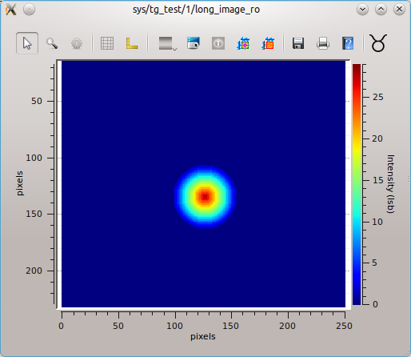

Image’s interface¶
The TaurusImageDialog widget is a Taurus Widget for displaying
image attributes from the control system. A contour plot
is created from the values of the image attribute.

A TaurusImage widget displaying the sys/tg_test/1/long_image_ro attribute
Many tools may be available, such as:
- zooming and panning
- X/Y cross sections
- Annotation tools (for creating labels, shapes,...)
- add/delete images
- ...
Note
The TaurusImageDialog widget is provided by
the taurus.qt.qtgui.extra_guiqwt module which depends on
the guiqwt module being installed. If guiqwt is not installed,
the image widget will not be available.
TaurusImageDialog as a stand-alone application¶
You may also use TaurusImageDialog as a stand-alone application for showing image attributes from the control system. You can launch the stand-alone Taurus Image with the following command:
taurusimage [options] <model>
Options:
-h, --help show this help message and exit
--demo show a demo of the widget
--version show program's version number and exit
Taurus Options:
Basic options present in any taurus application
--taurus-log-level=LEVEL
taurus log level. Allowed values are (case
insensitive): critical, error, warning/warn, info,
debug, trace
--taurus-polling-period=MILLISEC
taurus global polling period in milliseconds
--taurus-serialization-mode=SERIAL
taurus serialization mode. Allowed values are (case
insensitive): serial, concurrent (default)
--tango-host=TANGO_HOST
Tango host name
The model is the name of a taurus image attribute